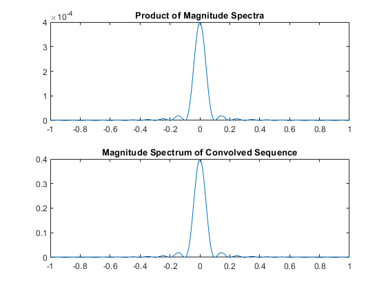
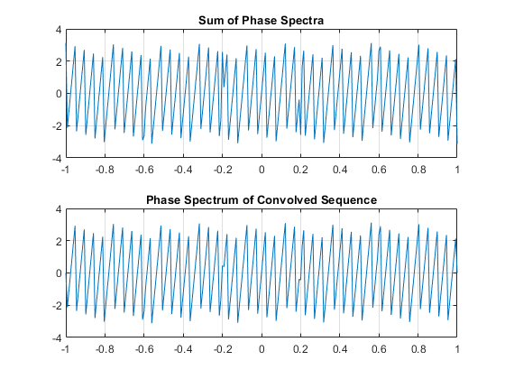
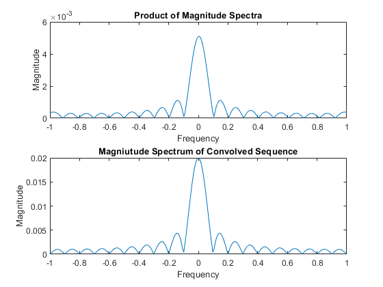
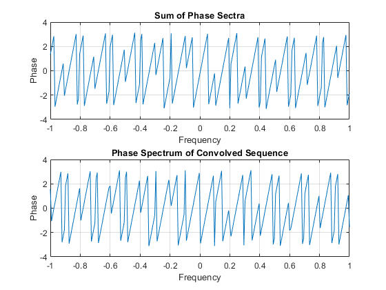

Contents
clc;
clear;
Task 2, section 1
delta_t = 1e-3;
precede = zeros(1,500);
trail = zeros(1,500);
sig_x = ones(1,1000);
x = [precede sig_x trail];
w = -pi:2*pi/255:pi;
y = conv(x,x);
Xf = freqz(x,1,w).*delta_t;
Mult = Xf.*Xf;
figure
subplot(2,1,1)
plot(w/pi,abs(Mult));
title('Product of Magnitude Spectra')
Convol = freqz(y,1,w).*delta_t;
subplot(2,1,2)
plot(w/pi,abs(Convol));
title('Magnitude Spectrum of Convolved Sequence')
figure
subplot(2,1,1)
plot(w/pi,angle(Mult));grid
title('Sum of Phase Spectra')
subplot(2,1,2)
plot(w/pi,angle(Convol));grid
title('Phase Spectrum of Convolved Sequence')
 
Task 2, section 2
y = x.*x;
Yf = freqz(y,1,w).*delta_t.*delta_t;
ConvF = conv(Xf,Xf);
ConvF = ConvF(128:128+256-1);
figure(4);
subplot(2,1,1);
plot(w/pi,abs(ConvF));
title('Product of Magnitude Spectra');
xlabel('Frequency');
ylabel('Magnitude');
Convol = freqz(y,1,w).*delta_t;
subplot(2,1,2);
plot(w/pi,abs(Convol));
title('Magniutude Spectrum of Convolved Sequence');
xlabel('Frequency');
ylabel('Magnitude');
figure(5);
subplot(2,1,1);
plot(w/pi,angle(ConvF));grid
title('Sum of Phase Sectra');
xlabel('Frequency');
ylabel('Phase');
Convol = freqz(y,1,w).*delta_t;
subplot(2,1,2);
plot(w/pi,angle(Convol));grid
title('Phase Spectrum of Convolved Sequence');
xlabel('Frequency');
ylabel('Phase');
 